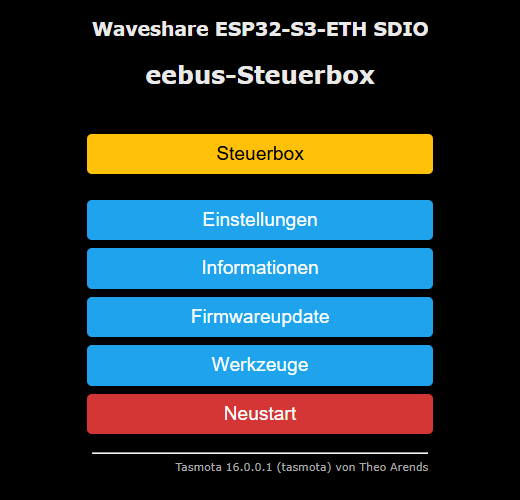
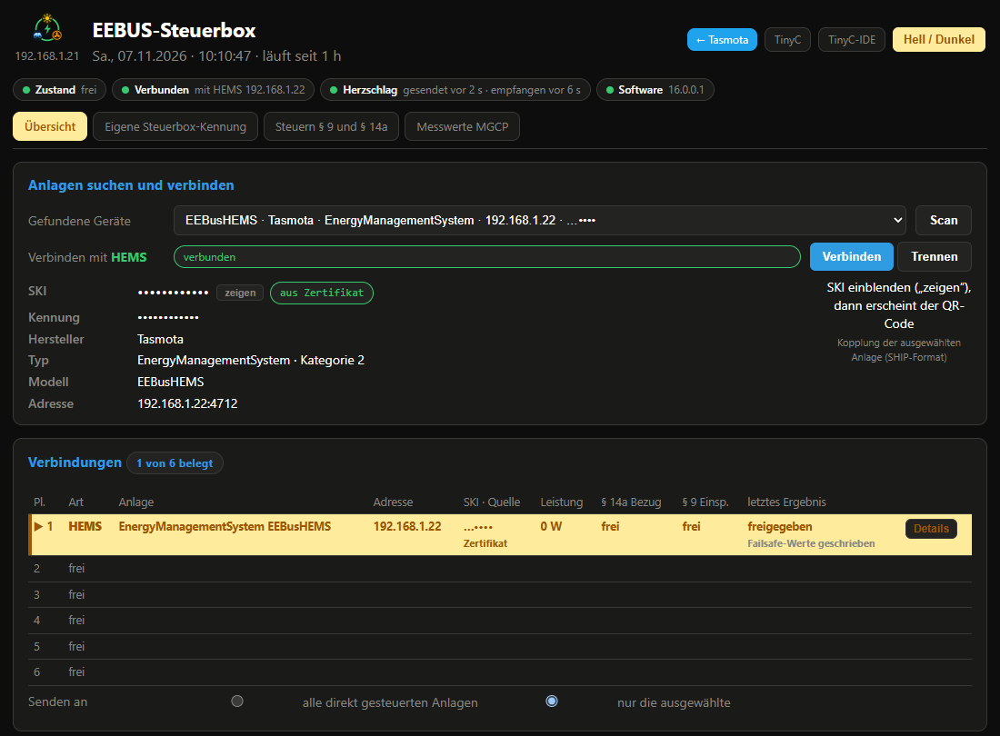
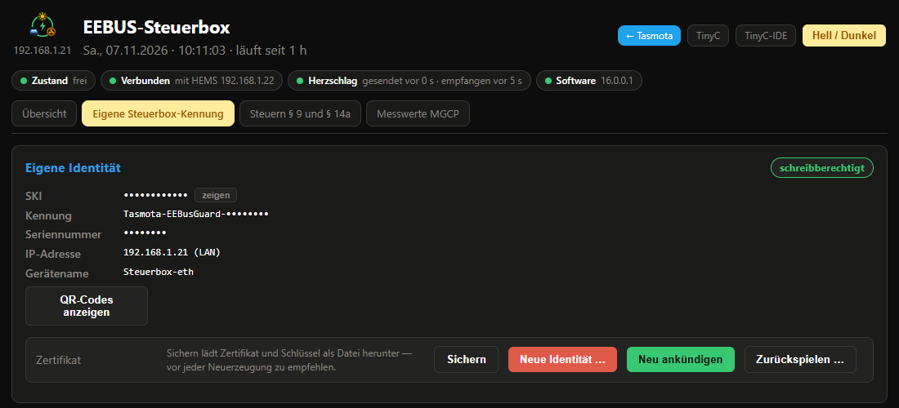
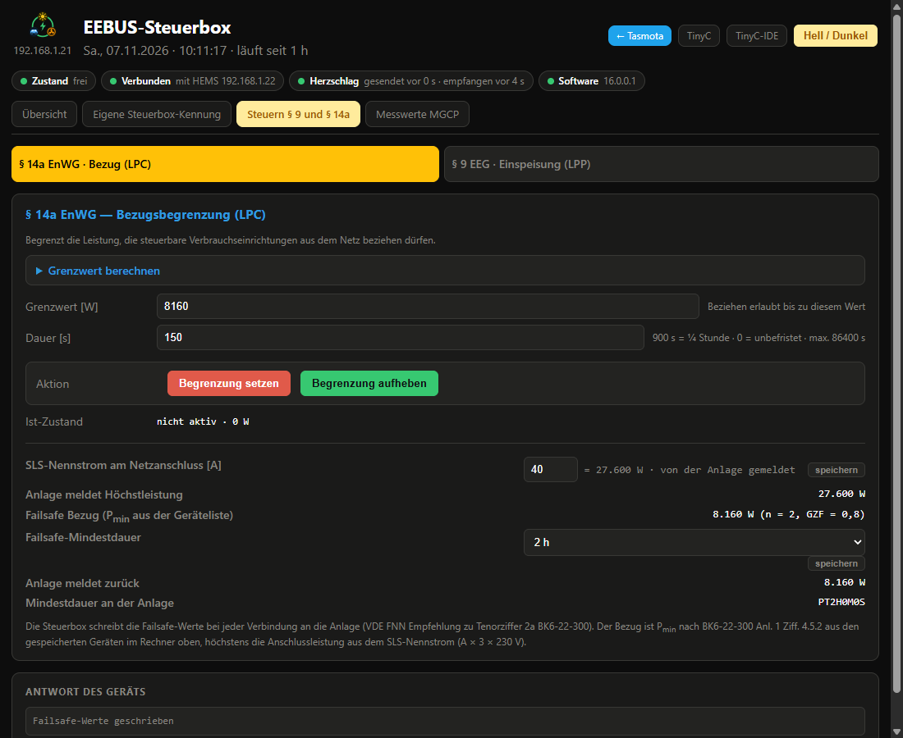
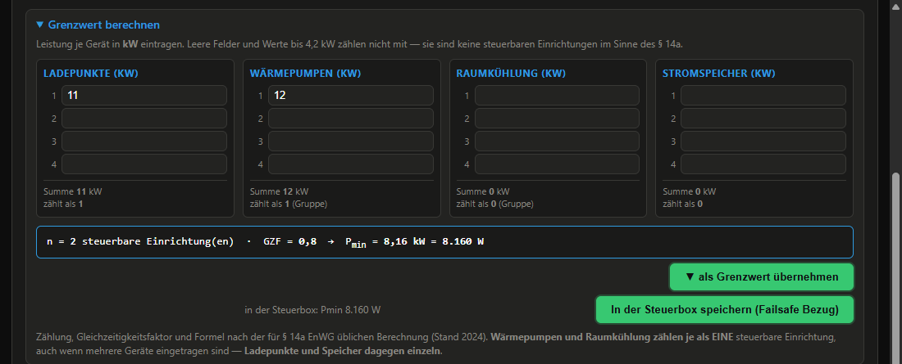
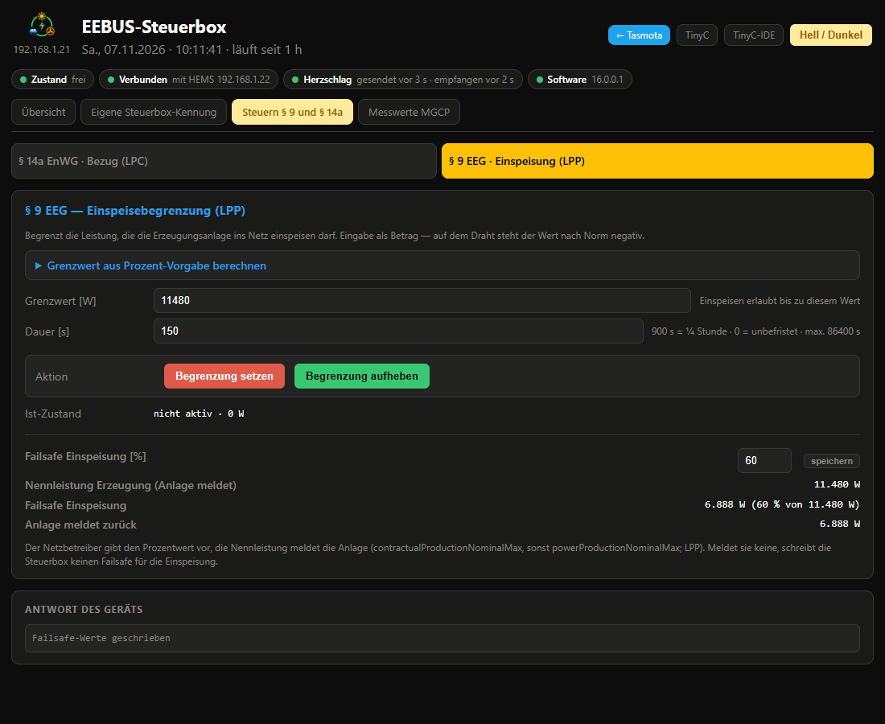
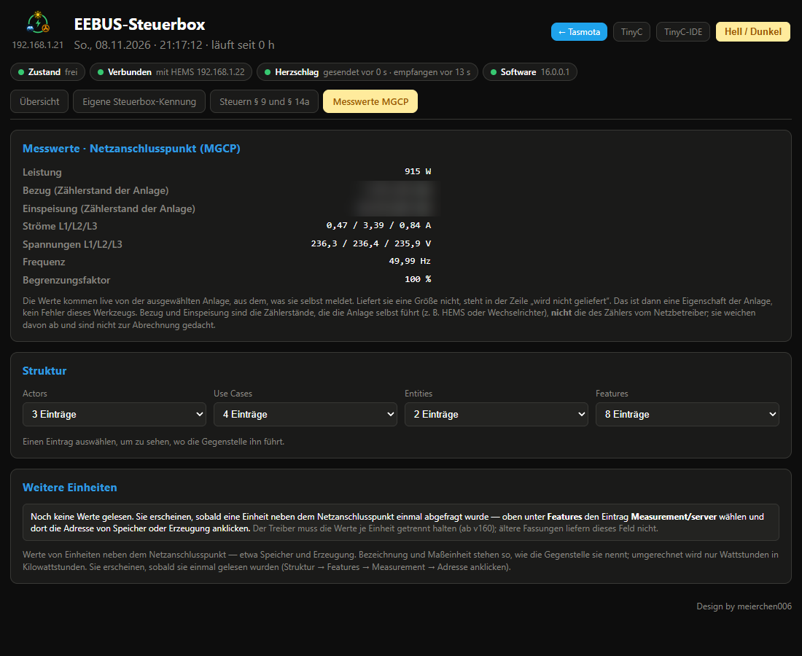
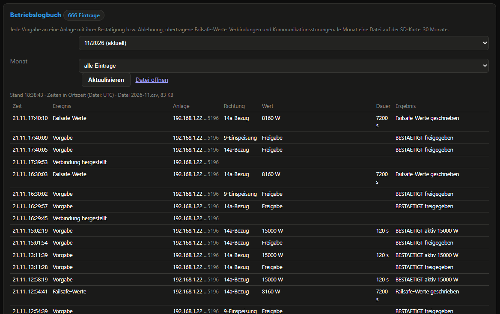
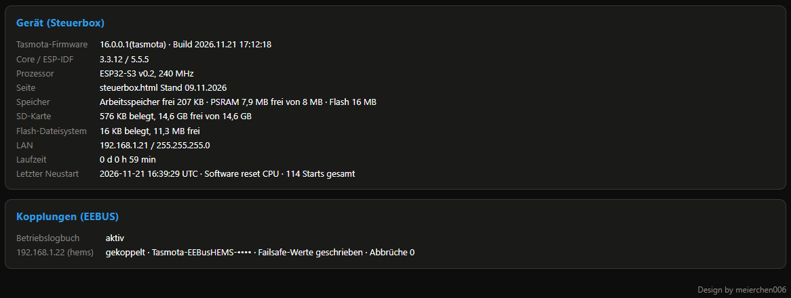

xdrv_126 · Firmware v247 · Persönliche Daten in den Bildern unkenntlich gemacht (Adressen auf 192.168.1.x umgeschrieben, Kennungen verdeckt)EEBusTrust (Abschnitte 3 und 8).Die Steuerbox spielt die Rolle, die sonst die Steuerbox des Netzbetreibers am Smart-Meter-Gateway übernimmt. In der EEBUS-Sprache ist sie der Energy Guard. Sie schickt per EEBUS zwei Arten von Vorgaben und liest Messwerte:
Für jede steuerbare Verbrauchseinrichtung entscheidet der Betreiber, wie sie angesteuert wird (BK6-22-300 Anlage 1 Ziff. 4.4):
Ein Gerät ist entweder direkt oder über ein HEMS angebunden, nie beides. Die Box kann aber gleichzeitig mit einem HEMS und mit mehreren direkt gesteuerten Geräten verbunden sein: bis zu 6 Verbindungen. Welche Art eine Verbindung ist, erkennt die Box am Gerätetyp der Gegenstelle (Energiemanager = HEMS, alles andere = direkt), und zwar für jede Verbindung einzeln. Von Hand festlegen lässt es sich mit EEBusPeerMode (Abschnitt 8).
Die Gegenstelle wird immer über die SKI aus ihrem Zertifikat erkannt, nicht über ihre Adresse – in beiden Richtungen: Die Box ruft an, oder die Gegenstelle ruft die Box an. Die Box prüft außerdem, dass die im Zertifikat eingetragene Kennung (SKI-Erweiterung) zum Schlüssel passt; sonst wird nicht verbunden. Groß-/Kleinschreibung der SKI spielt keine Rolle. Verbindungen laufen über IPv4 oder IPv6.
| Was | Wo / Wert | Warum |
|---|---|---|
| Vorlage | Waveshare ESP32-S3-ETH SDIO(Einstellungen → Vorlage) | Die SD-Karte hängt per SDIO 1-Bit am ESP32-S3: GPIO5 = D0, GPIO6 = CMD, GPIO7 = CLK. Beim Start steht im Log UFS: SDCard mounted (SDIO 1-bit). Auf der SD-Karte liegen Bedienseite und Betriebslogbuch. |
| HTTP API aktivieren | Haken setzen (Einstellungen → Erweitert; entspricht SetOption128 1) | Ohne den Haken weist Tasmota Abrufe ohne Herkunftsangabe ab (im Log HTP: Referer '' denied): Befehle von außen (/cm?cmnd=…) werden abgewiesen. |
| Firmware | gebaut mitCONFIG_FREERTOS_IDLE_TASK_STACKSIZE=3072 | Mit dem Vorgabewert 1024 Byte stürzte die Box (ESP32-S3 mit LAN-Chip W5500) gelegentlich ab: DebugException beim Taskwechsel. Gemessen mit TinyCStack: unter Last blieben von 1024 Byte nur 80 Byte frei, mit 3072 sind es über 2.200 Byte. Beim Bauen in der Bauvariante (custom_sdkconfig) eintragen. |
Auf der Tasmota-Hauptseite der Box auf „Steuerbox“ klicken.

Oben rechts: ← Tasmota (Hauptseite), TinyC, TinyC-IDE und Hell / Dunkel. Die Statuszeile darunter zeigt immer:
Die Seite hat fünf Reiter: Übersicht, Eigene Steuerbox-Kennung, Steuern § 9 und § 14a, Messwerte MGCP und Betriebslogbuch; rechts daneben Status.

txtvers=1 verwirft sie.Manche Geräte bauen die Verbindung lieber selbst auf. Die Box nimmt einen solchen Anruf nur an, wenn der Anrufer ein Zertifikat schickt und vertraut ist. Vertraut ist eine SKI, wenn sie
EEBusTrust <SKI> in die Liste der erlaubten Anrufer eingetragen ist (40 Hex-Zeichen), oderEEBusPeerMode <SKI> hems|steuve eine Betriebsart zugeordnet bekommen hat, oderEinen fremden Anrufer weist die Box ab; im Log steht „ist nicht vertraut – abgewiesen (zulassen: EEBusTrust <SKI>)“, im Betriebslogbuch „Anrufer abgewiesen – nicht vertraut“. EEBusTrust ohne Angabe zeigt die Liste, EEBusTrust 0 leert sie.
EEBusTrust eintragen (sie steht meist in dessen Oberfläche oder im mDNS-Eintrag, den der Scan zeigt), dann die SKI der Box im Gerät als vertrauenswürdig eintragen.Die Tabelle zeigt alle 6 Plätze: Art (HEMS oder direkt), Anlage, Adresse, SKI mit Quelle (Zertifikat), Leistung, Zustand § 14a und § 9 und das letzte Ergebnis; darunter klein, ob die Failsafe-Werte geschrieben sind. Die ausgewählte Anlage ist bernsteinfarben hervorgehoben (▶) – an sie gehen die Befehle, wenn unten „nur die ausgewählte“ eingestellt ist. Details wählt eine Anlage aus; ihre Werte stehen dann in den anderen Reitern.
Senden an: „nur die ausgewählte“ oder „alle direkt gesteuerten Anlagen“. „Alle“ geht nie an ein HEMS – das bekommt seinen Gesamtwert immer einzeln.
Bauen Box und Gegenstelle gleichzeitig je eine Verbindung zueinander auf (Doppelverbindung), schließt die Box eine davon nach der Regel der SHIP-Spezifikation (Vergleich der SKIs) – es bleibt genau eine Verbindung übrig.
Die Box sendet ihren Herzschlag an ein HEMS alle 4 s, an direkt gesteuerte Geräte alle 20 s, und sagt dabei zu, spätestens alle 60 s einen zu schicken (Wert heartbeatTimeout PT60S, wie die LPC-Testspezifikation es verlangt). Der Herzschlag geht als Meldung nur an Gegenstellen, die ihn abonniert haben; wer ihn nur liest, bekommt eine Antwort. Umgekehrt abonniert die Box den Herzschlag der Gegenstelle. Hat die Gegenstelle den Herzschlag der Box nicht abonniert, steht das als „Herzschlag nicht abonniert“ in Log und Betriebslogbuch. Die selbsttätige Vorgabe nach dem Verbinden (unten) schickt die Box erst, wenn das Abo besteht.
EEBusAutoConn <s> ändern und bleibt gespeichert. Trennen stoppt den Wiederaufbau bis zum nächsten Neustart, vergisst die Anlage aber nicht (dafür: EEBusAutoConn -1). Eine einzelne Anlage nimmt EEBusAutoConn -<SKI> aus der Liste. Die Box kündigt sich im Netz mit IPv4 und IPv6 an.
Sichern und Zurückspielen laufen über die Tasmota-Seite (Port 80) und sind durch das Web-Passwort geschützt, falls eines gesetzt ist.
Der Reiter hat zwei Unterreiter: § 14a EnWG · Bezug (LPC) und § 9 EEG · Einspeisung (LPP) (Abschnitt 6).

Die Box schreibt nur eine Grenze, die die Anlage genau so beschreibt, wie die LPC-Spezifikation es verlangt: Art „vorzeichenabhängiger Betrag“, Kategorie „Verpflichtung“, Richtung „Bezug“ (bei LPP „Erzeugung“), Bereich „Wirkleistungsgrenze“ und mit Bezug auf einen Messwert. Fehlt etwas davon, steht „Grenzenbeschreibung ungueltig“ im Betriebslogbuch und es wird nicht geschrieben – früher nahm die Box dann ersatzweise die erste gefundene Grenze. Meldet die Anlage die Grenze als nicht beschreibbar, schreibt die Box sie ebenfalls nicht („Grenze nicht beschreibbar“).

Der Rechner ermittelt den Mindest-Grenzwert Pmin für ein HEMS nach der Formel der Festlegung BK6-22-300 (Anlage 1 Ziff. 4.5.2): Werte bis 4,2 kW zählen nicht mit, Wärmepumpen und Raumkühlung zählen je als eine Einrichtung, Ladepunkte und Speicher einzeln; dazu der Gleichzeitigkeitsfaktor. Der Rechner sendet nichts – erst „Begrenzung setzen“ schickt den Wert.
Die Box überträgt bei jeder Verbindung die Failsafe-Werte an die Anlage (VDE-FNN-Empfehlung zu Tenorziffer 2a BK6-22-300, Kap. 4.1.2.5). Sie gelten, wenn die Verbindung zur Steuerbox abreißt:
Reihenfolge und Regeln, die die Box dabei einhält:
„Anlage meldet zurück“ und „Mindestdauer an der Anlage“ zeigen, was die Anlage nach dem Schreiben als Failsafe-Werte bestätigt.

Unten auf der Seite und in der Tabelle „Verbindungen“ steht die letzte Antwort der Gegenstelle, zum Beispiel „freigegeben“, „BESTAETIGT aktiv 6888 W“, „Failsafe-Werte geschrieben“, „ausgelaufen …“ oder „ABBRUCH durch Anlage (LPC-923)“ (Abschnitt 9). Eine Ablehnung steht ebenfalls dort.

Measurement/server wählen und dort die Adresse anklicken.EEBusData als VoltageLL).Alles auf der Seite geht auch per Konsole (Tasmota-Hauptseite → Werkzeuge → Konsole). <ziel> ist eine SKI (oder ihr eindeutiger Anfang), alle für alle direkt gesteuerten Anlagen, hm/auto für die einzige stehende Verbindung, oder eine Nummer aus der Fundliste (nicht empfohlen, die Reihenfolge wechselt).
| Befehl | Bedeutung |
|---|---|
EEBusScan | mDNS-Suche nach EEBUS-Geräten (dauert etwa 1,5 s) |
EEBusPeers | gefundene Geräte mit SKI, Typ, Adresse (Ip, bei IPv6 zusätzlich Ip6) und Betriebsart |
EEBusConnect <ski> | Verbindung aufbauen; beim ersten Kontakt die SKI der Box bei der Gegenstelle bestätigen |
EEBusConnectIp <adresse> | Verbindung zu einer Adresse aufbauen, die die Suche nicht findet (IPv4 oder IPv6, z. B. EEBusConnectIp 192.168.1.50); die SKI kommt aus dem Zertifikat der Gegenstelle |
EEBusDisconnect [ski] | Verbindung trennen; ohne Angabe alle |
EEBusTrustEEBusTrust <SKI>EEBusTrust 0 | Neu. Liste der erlaubten Anrufer anzeigen SKI (40 Hex-Zeichen) als erlaubten Anrufer aufnehmen; wird gespeichert Liste leeren (gemerkte Partner bleiben vertraut) |
EEBusPeerModeEEBusPeerMode <ski> hems|steuve|del | Betriebsart je Gerät anzeigen Betriebsart von Hand festlegen bzw. löschen (sonst aus dem Gerätetyp); eine Zuordnung macht die SKI auch zum vertrauten Anrufer |
EEBusStatus | alle 6 Plätze mit Art (hems/direkt), Handshake-Phase, SKI-Quelle, letztem Ergebnis, Alter des letzten eigenen Herzschlags (HerzschlagGesendetS) und dem Zustand des Betriebslogbuchs |
EEBusLpc <ziel> <watt> [s] | § 14a-Bezugsgrenze setzen, z. B. EEBusLpc alle 4200 900. Ohne Dauer gilt die Vorgabedauer (HEMS 900 s, direkt 3600 s); 0 = ohne Ende |
EEBusRelease <ziel> | Bezugsgrenze freigeben |
EEBusReleaseAll | alle Bezugsgrenzen freigeben (nicht die Einspeisung); jede Verbindung schickt dabei ihren letzten eigenen Wert mit |
EEBusLpp <ziel> <watt> [s] | § 9-Einspeisegrenze setzen (Betrag angeben); Dauer wie bei EEBusLpc |
EEBusLppFrei <ziel> | Einspeisegrenze freigeben |
EEBusFailsafeEEBusFailsafe <16 × kW> <%> <s> <A> | Failsafe-Vorgaben und berechnete Werte je Anlage anzeigen Geräteliste (4 Ladepunkte, 4 Wärmepumpen, 4 Klima, 4 Speicher in kW), Einspeise-Prozent, Mindestdauer, SLS-Nennstrom setzen; die Werte gehen sofort an alle verbundenen Anlagen |
EEBusCertEEBusCert 2 | eigene SKI anzeigen Zertifikat neu erzeugen (Kopplungen verfallen!) |
EEBusAutoConnEEBusAutoConn <s>EEBusAutoConn -1EEBusAutoConn -<SKI> | Zustand des Wiederaufbaus und gemerkte Partner anzeigen Wartezeit nach dem Start (Vorgabe 30 s, 0 = aus), wird gespeichert gemerkte Partner vergessen (kein Wiederaufbau mehr) genau diesen Partner vergessen (SKI oder eindeutiger Anfang, mind. 4 Zeichen) |
EEBusData | Ist-Zustände und Messwerte aller Verbindungen als JSON |
Die Befehle prüfen ihre Zahlen streng: Buchstaben, zu große oder unsinnige Werte werden abgelehnt und weder gesendet noch gespeichert. Für die Fehlersuche gibt es weitere Befehle (EEBusStruct, EEBusRead, EEBusMess, EEBusLog); sie stehen im Dateikopf des Treibers.
Die Box regelt alles Folgende selbst – es gibt dafür keinen Knopf und nichts einzustellen.
Die VDE-FNN-Empfehlung verlangt, dass die Steuerungseinrichtung Bestätigungen, nicht erfolgte Bestätigungen, Kommunikationsstörungen und abgewiesene Steuerbefehle im Betriebslogbuch protokolliert (Kap. 4.1.2.2 und Abschnitt Verbindungsüberwachung). Die Box schreibt es auf die SD-Karte (nie in den Flash):
/betriebslogbuch/, je Monat eine Datei, z. B. 2026-11.csv (UTF-8, Trennzeichen Semikolon).Zeit_UTC;Ereignis;Anlage;Adresse;Richtung;Wert;Dauer_s;Ergebnis – Zeit in UTC mit „Z“, Anlage = SKI.EEBusStatus zeigt es im Feld „Betriebslogbuch“.| Ereignis (so in der Datei) | Wann |
|---|---|
| Vorgabe | jede Grenze und Freigabe mit Ergebnis, z. B. „BESTAETIGT aktiv 4200 W“, „Write abgelehnt“. Jede Ablehnung steht einzeln da, ab der ersten Wiederholung mit deren Nummer („… (2. Wiederholung)“); die Ablehnung vor dem sofortigen Neuversuch heißt „Write abgelehnt – Herzschlag+Write sofort erneut (LPC-906)“. Gleiche Bestätigungen werden nicht doppelt eingetragen. |
| Failsafe-Werte / Failsafe-Werte abgelehnt | übertragene Failsafe-Werte mit Wert und Dauer bzw. deren Ablehnung |
| Abbruch durch Anlage (LPC-923) / (LPP-923) | die Anlage hat eine bestätigte Grenze selbst aufgehoben |
| Verbindung hergestellt | Datenphase erreicht |
| Kommunikationsstoerung – Verbindung getrennt | Verbindung verloren |
| Kommunikationsstoerung – Herzschlag aus / … beendet – Herzschlag wieder da | Herzschlag fällt bei stehender Verbindung aus bzw. kommt zurück |
| Netz wieder da – Wiederaufbau sofort | die Box hatte selbst kein Netz und hat es wieder |
| LPC-913 Frist verfehlt / LPP-913 Frist verfehlt | 60 s nach dem Verbinden noch keine Vorgabe in dieser Richtung geschrieben |
| Herzschlag nicht abonniert | die Anlage hat den Herzschlag der Box nicht abonniert |
| Abo abgelehnt | die Anlage lehnt ein Abo der Box ab (die Box liest die Werte dann alle 30 s) |
| Binding geloescht | die Anlage hat die Bindung der Box an ihre Grenze aufgehoben; die nächste Vorgabe bindet neu |
| Grenzenbeschreibung ungueltig / Grenze nicht beschreibbar | die Anlage beschreibt ihre Grenze nicht normgerecht bzw. als nicht änderbar |
| Befehl abgewiesen | Steuerbefehl ohne stehende Verbindung |
| Anrufer abgewiesen – nicht vertraut | ein Gerät ohne Vertrauen hat die Box angerufen (Abschnitt 3) |
EEBusFailsafe geändert, entstand beim Test am 22.11. kein eigener Eintrag (nur beim Verbinden); eine Änderung dazu ist nicht vorgenommen.Ein Eintrag sieht so aus:
2026-10-26T19:14:13Z;Befehl abgewiesen;…••••;;;EEBusLpc alle 4200 120;0;nicht ausfuehrbar - Kommunikationsstoerung


Der Reiter liest nur (jede Minute neu) und ändert nichts. Wichtig für die Fehlersuche: Letzter Neustart mit Grund. Steht dort ein Absturz (Exception) statt „Software reset“ oder „Power on“, bitte melden. Bewusst nicht angezeigt werden WLAN-Name, MAC, Hostname und SKI.
steuerbox.html und gepackt als steuerbox.html.gz auf der SD-Karte. Die Box liefert zuerst die .gz aus – die Seite ist schneller da und der Webserver weniger belastet..gz liegen, zeigt der Browser weiter die alte Seite..gz entsteht z. B. mit gzip -9 -k -n steuerbox.html.Die Gegenstelle meldet im SHIP-Handshake „pending“: Sie vertraut der Box noch nicht. Die SKI der Box muss dort bestätigt werden – bei manchen Energiemanagern über deren Portal. Erst danach antwortet die Gegenstelle mit „ready“. Die Box wartet dabei nach der SHIP-Regel 60 s und verlängert, wenn die Gegenstelle um Verlängerung bittet.
tls connect err=-1002)-1002 heißt: die TCP-Verbindung kommt nicht zustande, das Gerät nimmt auf diesem Port nicht an. Manche Geräte bauen die Verbindung nur selbst auf. Dann die SKI des Geräts mit EEBusTrust bei der Box eintragen, die SKI der Box im Gerät als vertrauenswürdig eintragen und warten, bis das Gerät anruft (Abschnitt 3).
Ein Gerät hat die Box angerufen, das sie nicht kennt. Gewollt? Dann EEBusTrust <SKI>. Sonst nichts tun – die Box hat richtig abgewiesen.
tls connect err=296Die Gegenstelle bricht den TLS-Aufbau ab, weil die Box ihr Zertifikat nicht mitschickt. Die Firmware braucht USE_MQTT_CLIENT_CERT und 24 KB Stapel (im aktuellen Stand automatisch gesetzt).
Ein Gerät drosselt nur, wenn es gerade mehr zieht als erlaubt. Liegt sein Verbrauch unter der Grenze, nimmt es sie an, ändert aber nichts. Bei einem HEMS zusätzlich prüfen, ob die Verbraucher dort gekoppelt sind.
Die Anlage beschreibt ihre Grenze nicht so, wie die LPC-Spezifikation es verlangt (Abschnitt 5). Seit v241 nimmt die Box dann nicht mehr ersatzweise irgendeine Grenze. Das ist eine Eigenschaft der Anlage; bitte mit EEBusStruct nachsehen und dem Hersteller melden.
Die Anlage hat die Grenze selbst aufgehoben, z. B. weil ein HEMS sie mit seinen nicht steuerbaren Verbrauchern nicht einhalten kann. Die Box wiederholt die Grenze mit wachsendem Abstand (Abschnitt 9). Bleibt es dabei, an der Anlage nach dem Grund sehen.
Richtig so: Direkt gesteuerte Geräte werden immer genau auf ihre Mindestleistung gedimmt (Abschnitt 5).
Richtig so: Eine noch laufende eigene Grenze schickt die Box nach der Wiederverbindung mit ihrer Restzeit erneut (Abschnitt 3). Nach einem Neustart der Box kennt sie ihre Grenzen nur noch aus dem, was die Anlage meldet; eine dort aktive Grenze hebt sie nicht von selbst auf.
Nach einem eigenen Neustart startet die SteuVE begrenzt auf ihren Failsafe-Wert und wartet auf eine Vorgabe. Die Box schickt sie nach der Verbindung von selbst (Abschnitt 3); danach steht „gesteuert“. Kommt binnen 120 s keine Vorgabe, wechselt die SteuVE auf „autonom“ (frei).
Die Gegenstelle hat eine Nachricht angefangen, der Rest kam nicht rechtzeitig. Seit v241 wartet die Box darauf bis zu 10 s, ohne dabei stehen zu bleiben (vorher 1 s) – das deckt die Wiederholzeiten von TCP ab, die die SHIP-Spezifikation nennt. Kommt der Rest auch dann nicht, baut die Box ab und nach wenigen Sekunden neu auf. Früher trat die Meldung auf, wenn das HEMS auf WebLog 4 (Debug) stand und gleichzeitig seine Seite im Browser offen war. Im Dauerbetrieb Gegenstellen deshalb nicht auf Log-Stufe 4 lassen.
Eine Gegenstelle nimmt gerade keine Daten ab. Die Box wartet kurz und liest dabei weiter; klappt es nicht, beendet sie die Verbindung sauber und baut sie neu auf (Abschnitt 3). Kommt das häufig vor, Netzwerk der Gegenstelle prüfen.
Nur ein Hinweis: zwei Grenzen innerhalb von 5 Minuten. Die Box hat die Vorgabe trotzdem geschickt (Abschnitt 9).
Auf der SD-Karte liegt noch eine alte steuerbox.html.gz. Beide Dateien ersetzen (Abschnitt 9) und die Seite neu laden.
Vorlage prüfen: Es muss Waveshare ESP32-S3-ETH SDIO sein (Abschnitt 2). Im Log beim Start muss UFS: SDCard mounted (SDIO 1-bit) stehen, sonst steht dort „Betriebslogbuch aus – keine SD-Karte“.
Der Haken „HTTP API aktivieren“ fehlt (Abschnitt 2). Haken setzen und speichern – die Box startet dabei neu.
Im Reiter Status unter „Letzter Neustart“ nachsehen. Steht dort eine Exception und war die Firmware mit dem Vorgabewert CONFIG_FREERTOS_IDLE_TASK_STACKSIZE=1024 gebaut, ist das sehr wahrscheinlich der zu kleine IDLE-Stapel (Abschnitt 2). Firmware mit 3072 nehmen. Prüfen lässt es sich mit dem Konsolenbefehl TinyCStack: Bei IDLE0 und IDLE1 sollten unter Last deutlich mehr als 200 Byte frei bleiben (StackFreeMin).
Nie zwei Boxen mit demselben Zertifikat gleichzeitig betreiben – die Gegenstelle kann sie nicht unterscheiden. Für einen Umzug auf ein anderes Board: alte Box Sichern, neue Box Zurückspielen, alte Box danach nicht mehr einschalten.
Dieser Abschnitt listet alle Gerätetests, die wir mit der Steuerbox gemacht haben, mit den Zeiten aus den Mitschriften. Zeiten sind deutsche Ortszeit (MEZ). „Bestanden“ heißt: Das Ergebnis erfüllt die Erwartung der jeweiligen Testspezifikation, geprüft mit unseren eigenen Geräten, nicht mit dem offiziellen Testwerkzeug der EEBUS Initiative (Abschnitt 12, Grenzen).
| Schritt | Beobachtung | Bewertung |
|---|---|---|
| Grenze schreiben | Vorgabe 8.160 W mit 120 s Dauer geschrieben; nach 3 s zurückgelesen: „aktiv 8160 W“ bestätigt. | bestanden |
| Herzschlag | Der Herzschlag der Steuerbox (Zusage 60 s, PT60S) wird vom handelsüblichen HEMS angenommen. | bestanden |
| Ablauf und Freigabe | Die Grenze ist nach 120 s ausgelaufen; die anschließende Freigabe hat das handelsübliche HEMS angenommen. | bestanden |
| Verteilung im handelsüblichen HEMS | Das handelsübliche HEMS teilte starr durch 3 – auf seine drei eingetragenen EEBUS-Geräte, darunter eine nicht verbundene SteuVE: Wallbox 2.720 W, Wärmepumpe 2.720 W. Das Gateway der Wärmepumpe setzte Verdichter 2,72 kW und Heizstab 0 kW; die Hersteller-App zeigte „Externe Leistungsreduzierung aktiv“. Beide Geräte haben in 2–6 s umgesetzt (Gerätedaten, eBUS, App). | bestanden |
| Beim Verbinden | Das handelsübliche HEMS setzte den Wechselrichter für ca. 2 min auf die Failsafe-Einspeisung (60 %), danach wieder zurück. | Hinweis |
| Schritt | Beobachtung | Bewertung |
|---|---|---|
| Grenze schreiben | Vorgabe 8.160 W mit 120 s Dauer an das HEMS; das HEMS bestätigt nach 5,0 s, erst nachdem beide Geräte geantwortet haben. | bestanden |
| Verteilung im HEMS | Wärmepumpe 3.300 W (Deckel), Wallbox 7.079 W (8.160 W − 1.081 W echter Verbrauch der Wärmepumpe); beide Geräte melden „aktiv“ mit genau diesem Wert zurück. | bestanden |
| Wärmepumpe | Das Gateway setzt Verdichter 3,3 kW und Heizstab 0 kW (gesperrt); die Hersteller-App zeigt „Externe Leistungsreduzierung aktiv“. Der Verdichter läuft weiter. | bestanden |
| Wallbox | Zeigt „§14a EnWG aktiv (7079 W)“. | bestanden |
| Ablauf und Freigabe | Nach 120 s ausgelaufen; Freigabe an beide Geräte weitergegeben und angenommen. | bestanden |
Vergleich handelsübliches HEMS (11.1) und unser HEMS (11.2) bei derselben Vorgabe von 8.160 W:
| Gerät | handelsübliches HEMS | unser HEMS (v041) |
|---|---|---|
| Wärmepumpe | 2.720 W (ein Drittel) | 3.300 W (Deckel = Nennleistung ohne Heizstab) |
| Heizstab | 0 kW (gesperrt) | 0 kW (gesperrt) |
| Wallbox | 2.720 W (ein Drittel) | 7.079 W (der Rest nach dem echten Verbrauch der Wärmepumpe) |
| EEBUS-SteuVE (virtuell, nicht angeschlossen) | 2.720 W (ein Drittel) | – (nicht in der Rangliste) |
Wichtig für die Bewertung: Das Test-HEMS beantwortet eine Grenze erst, wenn seine Gateways geantwortet haben, und lehnt ab, wenn die nicht steuerbaren Geräte die Grenze schon überschreiten. Damit ließen sich Ablehnungen (NACK) und Abbrüche ohne Code-Änderung echt herbeiführen – etwa durch Ziehen des Netzwerkkabels eines Gateways oder Ausschalten eines Shellys.
Die Testspezifikation nennt für den Energy Guard acht Prüffälle (Tabellen 14 bis 21). Alle acht wurden am Gerät durchgeführt.
| Prüffall | Was geprüft wird | Durchführung und Ergebnis | Bewertung |
|---|---|---|---|
| EGHeartbeat_001 (Tab. 14) 22.11., v243 | Die Box sendet regelmäßig Herzschläge; zwischen zwei Herzschlägen höchstens 60 s. | Herzschlag alle 4–5 s; das HEMS zeigt die Zusage der Box mit 60 s (PT60S). | bestanden |
| EGConnection_001 (Tab. 15) 22.11., v243 | Nach einem Neustart der Box: Herzschlag und anschließend eine Grenze binnen 60 s. | Box 150 s stromlos (PoE gezogen). HEMS geht nach 120 s in den Failsafe. Box nach dem Start nach 24 s verbunden; Bezug-Freigabe nach 12 s, Einspeise-Freigabe nach 16 s, danach Failsafe-Werte. Das HEMS verlässt den Failsafe. | bestanden |
| EGConnection_002 (Tab. 16) Lauf 1: 22.11., v243 | Nach Wiederherstellung der Verbindung: Herzschlag und Grenze binnen 60 s. | Nur Netzwerk 150 s getrennt (Box so umgebaut, dass die Versorgung bleibt). Box erkennt den Ausfall nach 3 s (Betriebslogbuch „Kommunikationsstoerung“), HEMS Failsafe nach 120 s. Nach dem Stecken: Bezug nach 11 s, Einspeisung nach 15 s; HEMS verlässt den Failsafe. | bestanden |
| EGConnection_002 Lauf 2: 22.11., v243 | wie oben, langer Ausfall | Box und HEMS rund 6 min ohne Netz (22:38:52 bis 22:45:06). Nächster Verbindungsversuch 22:45:26, verbunden 22:45:32, Bezug-Freigabe 22:45:44 = 38 s nach Netzrückkehr; HEMS verlässt den Failsafe 22:45:47. Befund: Der Versuch kam zufällig günstig. Kommt das Netz kurz nach einem Nachsehen zurück, kann bis zu rund 30 s Wartezeit plus Aufbau hinzukommen – die Freigabe hätte dann bei rund 50 s oder mehr gelegen, die 60-s-Frist wäre knapp geworden oder verfehlt. Daraus entstand v244 (sofort nachsehen bei Netzrückkehr). | bestanden, mit Befund |
| EGConnection_002 Lauf 3: 23.11., v244 | wie oben, mit v244 | Netz ca. 9,5 min getrennt. Gesteckt ca. 10:06:13 → Betriebslogbuch „Netz wieder da“ 10:06:13, verbunden 10:06:26, HEMS gesteuert 10:06:32, Bezug-Freigabe 10:06:33 (20 s), Einspeisung 10:06:37 (24 s), Failsafe-Werte 10:06:39. Kein Eintrag „LPC-913/LPP-913 Frist verfehlt“. | bestanden |
| EGConnection_003 (Tab. 17) 23.11., v244 | Schwarzstart: Box und Gegenstelle 90 s stromlos; die Box verbindet sich selbst wieder und schickt binnen 60 s Herzschlag und Grenze. | Beide aus 10:13:10, wieder an ca. 10:14:43 (von Hand, 3–5 s Versatz). Verbunden 10:15:08 (25 s nach dem Start), erster Herzschlag am HEMS ca. 10:15:16, HEMS gesteuert 10:15:18, Bezug-Vorgabe 10:15:20 (12 s nach der Verbindung), Einspeisung 10:15:26. Die Testspezifikation verlangt einen Durchgang. Ein zusätzlicher eigener Durchgang „HEMS 5 min später einschalten“ wurde nicht gemacht. | bestanden |
| EGMessages_001 (Tab. 18) 22.11., v243 | Grenze ohne Dauer auf ein externes Signal hin; die Gegenseite nimmt an. | LPC: 5.000, 8.000 und 11.000 W ohne Dauer – alle bestätigt (ACK), Freigaben bestätigt. Dasselbe für LPP mit 3.000, 6.000 und 9.000 W (auf der Leitung negativ). | bestanden |
| EGMessages_002 (Tab. 19) 23.11., v244 | Nach Neustart der Box lehnt die Gegenseite eine Grenze ab (NACK); die Box schickt erneut Herzschlag und Grenze binnen 60 s. | Ablehnung echt erzwungen: Netzwerkkabel beider Gateways gezogen → HEMS rechnet 19.220 W nicht steuerbar → jede kleinere Grenze NACK (Fehler 7). Vor jedem Durchgang Box-Neustart. 5.000 W: NACK 10:41:09, Herzschlag + Grenze sofort erneut 10:41:11 (NACK), Gateways zurück 10:42:06, Wiederholung 10:42:12 → ACK 10:42:17. 8.000 W: NACK 10:31:37, erneut 10:31:39, Wiederholung 10:32:42 → ACK 10:32:47. 11.000 W: NACK 10:35:44, erneut 10:35:47, Wiederholung 10:36:48 → ACK 10:36:56. Freigaben danach bestätigt. Ein erster 5.000-W-Durchgang lief versehentlich mit 900 s Dauer statt ohne Dauer; er wurde mit Dauer 0 wiederholt (oben). | bestanden (3/3) |
| EGMessages_003 (Tab. 20) 22.11., v243 | Viele gültige Nachrichten hintereinander: Grenze mit Dauer, dann Freigabe, 25-mal. | 50 Durchgänge: 25 × LPC und 25 × LPP, je Grenze mit Dauer und Freigabe – alle angenommen. | bestanden |
| EGMessages_004 (Tab. 21) 22.11., v243 | Failsafe-Grenze und Failsafe-Mindestdauer, 5-mal geschrieben. | 5 × Failsafe-Werte (50–70 %, 2–24 h) geschrieben, das HEMS meldet jeweils genau diese Werte zurück. Danach Vorgaben wiederhergestellt. | bestanden |
| Test | Was geprüft wird | Durchführung und Ergebnis | Bewertung |
|---|---|---|---|
| Abbruch durch die Anlage (LPC-923) 21.11. mit v235 | Hebt die Anlage eine bestätigte Grenze selbst auf, muss die Box das erkennen. | Ein Gateway vom Strom genommen bei 4.200 W → HEMS hebt die Grenze auf. Die Box zeigte weiter „BESTAETIGT aktiv 4200 W“, kein Eintrag im Betriebslogbuch. | Befund → v236 |
| Abbruch durch die Anlage 22.11. mit v238/v239 | wie oben, mit Auswertung | Shelly an einem Gateway ausgeschaltet → Gateway „Verbrauch unbekannt“ → HEMS bricht nach oben ab → Box: Betriebslogbuch „Abbruch durch Anlage (LPC-923)“, Wiederholung → NACK (Shelly noch aus) → Shelly an → nächste Wiederholung ACK nach 4,1 s. | bestanden |
| Wiederholung nach Ablehnung 22.11. mit v236 | Wie oft wiederholt die Box nach Fehler 7? | v236 wiederholte bei jeder Ablehnung dreimal sofort – im Test ging etwa alle 13 s eine Grenze an das HEMS. Seit v237: einmal sofort nur in den ersten 120 s nach dem Verbinden, sonst 60 s, 120 s … bis 10 min. | Befund → v237 |
| Betriebslogbuch vollständig 23.11., v245 | Jede Ablehnung muss im Betriebslogbuch stehen (Ablauf wie EGMessages_002). | Gateways ab 12:06; das HEMS erkennt den Herzschlagausfall nach 90 s (12:07:26). Box-Neustart, 5.000 W Dauer 0. Betriebslogbuch: 12:10:46 „abgelehnt – sofort erneut (LPC-906)“, 12:10:50 abgelehnt, 12:11:53 „abgelehnt – sofort erneut“ (noch im 120-s-Anlauffenster), 12:11:56 abgelehnt (1. Wiederholung), Gateways gesteckt → 12:14:04 „BESTAETIGT aktiv 5000 W“ (Quittung des HEMS nach 4,2 s), 12:14:14 „BESTAETIGT freigegeben“. | bestanden |
| SHIP-Handshake 22.11., v242/v243 | Verbindungsaufbau nach SHIP-Spezifikation 1.1.0. | Zertifikat mit SKI-Erweiterung, WebSocket-Annahme, Verbindungseröffnung (CMI), Protokollauswahl, PIN-Zustand und Zugangswege (accessMethods) in Ordnung; Ping/Pong in Ordnung. | bestanden |
| MGCP: ungültige Werte verwerfen 22.11., v243 | Als fehlerhaft gekennzeichnete Messwerte dürfen nicht übernommen werden. | Das Test-HEMS hat keinen Zähler und meldet alle 10 Messwerte mit dem Zustand „error“. Die Box übernimmt keinen davon (v242 hätte 0 W bzw. 0 V angezeigt). | bestanden |
| Kurztest v246 23.11. | Nach den SPINE-Änderungen läuft alles wie vorher; keine neue Regel greift fälschlich. | Box-Neustart mit Mitschrift: Handshake, Erstkopplung, Anmeldung (Freigabe Bezug und Einspeisung) und Failsafe-Werte nach ca. 18 s. 5.000 W Dauer 0 → „BESTAETIGT aktiv“ nach 7 s, Freigabe bestätigt. Herzschlag beidseitig, keine verlorenen. Keine Zeile „Call … abgelehnt“ oder „liest NodeManagement an …“ in den Mitschriften von Box und HEMS. | bestanden |
| v246 mit neuer HEMS-Firmware 23.11. | Zusammenspiel mit dem nach denselben Regeln überarbeiteten Test-HEMS. | Box sofort wieder verbunden, Zusage 60 s, Anmeldung und Failsafe in Ordnung. 5.000 W Dauer 0 → Quittung des HEMS nach 4,3 s, beide Gateways bestätigen (5.000 W bzw. 4.998 W); Freigabe bestätigt. | bestanden |
| Freigabe nie 0 (v247) 24.11., Hausnetz | Nach einem Neustart der Box darf am Wärmepumpen-Gateway keine 0-W-Grenze ankommen. | Box-Neustart mit v247 um 14:05: Das HEMS bekam die Freigabe mit 11.000 W statt 0 W. Am eBUS der Wärmepumpe kam keine Grenze an, der Verdichter lief durch (Vergleich 23.11. mit v246: 0-W-Grenze und Verdichterstopp). | bestanden |
| Lastprobe IDLE-Stapel 21.11., v235 | Läuft die Box unter Last ohne Absturz? | 3 min Lastprobe mit IDLE-Stapel 3072 Byte: frei mindestens 2.240 bzw. 2.312 Byte (vorher 200 bzw. 80 Byte), kein Neustart. | bestanden |
Bevor die strengeren Regeln von v246 an der echten Box im Hausnetz eingesetzt werden, haben wir Mitschnitte der Kommunikation mit drei echten Geräten aus Juli bis November durchgesehen: Home Energy Management System, Wärmepumpe und Wallbox. Ergebnis: Keines der Geräte löst eine der neuen v246-Regeln aus – keine fremden Befehle (Calls), alle Befehle und Lesezugriffe auf die Geräteverwaltung (NodeManagement) gehen an die richtige Adresse, keine Abo- oder Binding-Löschungen, keine Meldung „Use Case nicht verfügbar“, keine Leerzeichen um die Doppelpunkte im JSON. Die Wallbox abonniert den Herzschlag der Box.
Gefunden wurde aber: Das Home Energy Management System und die Wärmepumpe lesen beim Herzschlag-Feature der Box einen Wert, den die Box dort nicht anbietet (deviceDiagnosisStateData). Würde die Box das wie von der SPINE-Testspezifikation empfohlen mit Fehler 6 ablehnen, wäre das Verhalten dieser Geräte nicht vorhersehbar. Deshalb beantwortet die Box solche Zugriffe weiter (bewusste Abweichung, Abschnitt 12).
Ziel war, die Steuerbox so nah an Norm und Gesetz zu bringen, wie es uns möglich ist. Dazu haben wir die Regelwerke Regel für Regel gegen den Code gelesen (drei unabhängige Prüfungen am 22.11. für Steuerbox, HEMS und Gateways, danach je eine Prüfung für SHIP, MGCP/LPP und SPINE), Lücken geschlossen und jede Änderung im Dateikopf des Treibers mit Fundstelle vermerkt. Normzitate stehen hier sinngemäß auf Deutsch mit Regelnummer; maßgeblich ist der Originaltext.
| Regelwerk | Wofür |
|---|---|
| § 14a EnWG | Netzorientierte Steuerung steuerbarer Verbrauchseinrichtungen |
| BNetzA-Festlegung BK6-22-300, Anlage 1 | Wie gesteuert wird: direkt oder über ein Energiemanagementsystem (Ziff. 4.4 a/b), Mindestleistung 4,2 kW bzw. 0,4 × Leistung bei großen Wärmepumpen/Klimageräten (Ziff. 4.5.1), Formel Pmin mit Gleichzeitigkeitsfaktor für ein HEMS (Ziff. 4.5.2) |
| § 9 EEG | Begrenzung der Einspeisung von Erzeugungsanlagen |
| VDE-FNN-Empfehlung zu Tenorziffer 2a BK6-22-300 (Okt. 2024) | Betriebslogbuch (Kap. 4.1.2.2), Failsafe-Werte übertragen (Kap. 4.1.2.5), Verbindungsüberwachung |
| EEBUS Use Case LPC (Technische Spezifikation V1.0.0, Umsetzungsleitfaden), Testspezifikation V1.0.2 | Bezugsbegrenzung – Zustände, Herzschlag, Failsafe, Prüffälle EGHeartbeat/EGConnection/EGMessages |
| EEBUS Use Case LPP (TS 1.0.0), Testspezifikation V1.0.2 | Einspeisebegrenzung |
| EEBUS Use Case MGCP (TS 1.0.0), Testspezifikation V1.0.2 | Messwerte am Netzanschlusspunkt |
| SPINE (Protokollspezifikation), SPINE-Testspezifikation V1.1.0, SPINE-Umsetzungsleitfaden V1.0.0 | Nachrichten, Quittungen, Abos, Bindungen, Geräteverwaltung |
| SHIP TS 1.1.0, SHIP-Testspezifikation 1.0.0 | Verbindungsaufbau, Vertrauen, TLS, WebSocket |
| Bereich | Umsetzung (Regel sinngemäß) |
|---|---|
| Herzschlag | Herzschlag mindestens alle 60 s (LPC-005), tatsächlich alle 4 s bzw. 20 s; Zusage genau 60 s (LPC-Testspezifikation Tab. 13); Meldung nur an Abonnenten, bloßes Lesen nur beantworten (SPINE); Herzschlag der Anlage abonnieren und überwachen, bei Verlust neu abonnieren; Zeitstempel in UTC mit „Z“. |
| Grenze schreiben | Unmittelbar vor der Grenze ein Herzschlag – ist der letzte älter als 50 s, schickt die Box erst einen (LPC-913/914); nur eine normgerecht beschriebene, änderbare Grenze wird beschrieben (LPC-TS Tab. 22/23, Leitfaden Kap. 3.4); Dauer relativ, Ablauf wird erkannt; Bestätigung (ACK) und Ablehnung (NACK) werden der richtigen Nachricht zugeordnet; die eigene Bindung wird über die Nachrichtennummer erkannt. |
| Nach Verbindung / Wiederkehr | Herzschlag und Grenze binnen 60 s je Richtung (LPC-913, LPP-913), Überwachung dieser Frist im Betriebslogbuch; laufende Grenze mit Restzeit statt Freigabe; Herzschlag nach mehr als 110 s Pause zählt als Wiederkehr; sofortiges Nachsehen bei Netzrückkehr; Wiederaufbau nach einem Schwarzstart ohne Aufgeben (EGConnection_003). |
| Ablehnung und Abbruch | Nach einer Ablehnung im Anlauf einmal sofort Herzschlag und Grenze erneut (LPC-906, EGMessages_002); sonst Wiederholung mit wachsendem Abstand bis 10 min (Leitfaden Kap. 2.5); Abbruch durch die Anlage wird erkannt und protokolliert (LPC-923, LPP-923). |
| Failsafe | Failsafe-Leistung und -Mindestdauer 2–24 h werden übertragen (FNN Kap. 4.1.2.5, LPC-Leitfaden Kap. 2.15), erst nach der ersten Grenze jeder Richtung; abgelehnte Werte werden wiederholt; nicht änderbare Werte werden nicht geschrieben; neue Nennleistung → neuer Failsafe-Wert (LPP-021). |
| Einspeisung | Nur an Anlagen, die LPP anbieten; Nennleistung nur aus der Kenngröße der gesteuerten Einheit. |
| Messwerte (MGCP) | Fehlerhafte Werte verwerfen (MGCP-003), Phase aus der Beschreibung (MGCP-051/061), Außenleiterspannungen getrennt, Vorzeichen nach Zählrichtung, Messart und Einheit prüfen; Messwert-Antworten in der Steuerbox-Rolle nicht mehr angeboten. |
| SPINE | Antwortfrist auch bei eingehenden Verbindungen, mit der Frist der Anlage; Quittungen auf Meldungen und Antworten, die eine Quittung verlangen; unbekannte Lesezugriffe mit Fehler 6; Abo- und Binding-Liste der Gegenstelle wird geführt und ausgeliefert; Bindung an die Geräteverwaltung wird abgelehnt (Fehler 7), unbekannte Befehle mit Fehler 6, Befehle an eine falsche Adresse mit Fehler 6; Abo-Ergebnis auswerten, bei Ablehnung alle 30 s lesen; Abo-Löschung und geänderte Geräteliste auswerten; Löschung der Bindung bzw. Fehler 9 („Bindung nötig“) → neu binden; „Use Case verfügbar“ des Servers wird wie vorgeschrieben nicht ausgewertet (Leitfaden Kap. 2.2); JSON mit Leerraum wird gelesen. |
| SHIP | Verbindungseröffnung ohne Blockieren mit 15 s Frist; Hello-Phase mit 60 s und Verlängerung; Protokollauswahl prüfen, Fehler 1/2/3 senden; PIN-Zustand binnen 10 s; Anrufer nur mit Zertifikat und nur, wenn vertraut; SKI-Erweiterung im Zertifikat muss passen; Doppelverbindungen auflösen; Datensätze höchstens 1024 Byte; Servername = mDNS-Name; WebSocket-Kopf und -Nachrichtenarten prüfen, Schließen beantworten; Pong binnen 10 s; Rest einer Nachricht 10 s abwarten; mDNS nur mit txtvers=1. |
| Betriebslogbuch | Bestätigungen, Ablehnungen (jede einzeln), Kommunikationsstörungen, abgewiesene Steuerbefehle, Failsafe-Werte, Fristverletzungen (FNN Kap. 4.1.2.2, Verbindungsüberwachung); 30 Monate auf SD-Karte. |
Die Normprüfung vom 22.11. hatte für die Steuerbox 9 Muss-Lücken, 6 Soll-Punkte und 2 Abweichungen gefunden. Alle sind in v239 bis v241 umgesetzt; nur die Schreibrate (siehe unten) ist eine bewusste Abweichung geblieben.
| Abweichung | Begründung |
|---|---|
| Neuversuch nach einer gültigen Ablehnung | Der SPINE-Umsetzungsleitfaden (Kap. 2.6.1) sagt sinngemäß: Ein gültiges NACK soll keinen Neuversuch auslösen. Die LPC-Regeln (LPC-906, Leitfaden Kap. 2.5) und der Prüffall EGMessages_002 verlangen aber nach Fehler 7 den erneuten Versuch. Die speziellere Use-Case-Regel geht vor. |
| Zugriffe auf nicht angebotene Funktionen werden beantwortet | Die SPINE-Testspezifikation erwartet hier Fehler 6. Das Home Energy Management System und die Wärmepumpe lesen aber am Herzschlag-Feature der Box deviceDiagnosisStateData, das dort nicht angeboten ist (Abschnitt 11.6). Eine Ablehnung könnte diese Geräte stören; ändern erst nach Test mit ihnen. |
| Grenzen öfter als alle 5 min | Der LPC-Leitfaden (Kap. 2.10) empfiehlt (Soll), höchstens alle 5 min zu schreiben. Eine Steuerbox soll Vorgaben nicht zurückhalten, und der Prüffall EGMessages_003 schreibt selbst 50-mal hintereinander. Die Box schreibt sofort und gibt nur einen Hinweis im Log. |
| Kein Einspeise-Failsafe ohne gemeldete Nennleistung | Ein Prozentsatz einer unbekannten Leistung wäre geraten. |
| Messbereichsangaben (measurementConstraints) nicht ausgewertet | Soll-Regel. Ein Wert außerhalb des Bereichs wird nach MGCP ohnehin von der Anlage gekennzeichnet und dann verworfen. |
| Kennung der Gegenstelle (SHIP-id) nicht dauerhaft gespeichert | Die Box findet Partner über die SKI im mDNS-Eintrag; die Kennung kommt dort jedes Mal mit. |
| Format der specificationVersion | Ein abweichendes Format der Gegenstelle führt nur zu einer Warnung, nicht zum Abbruch. |
| Version | Was sich geändert hat |
|---|---|
| v236–v238 | Abbruch durch die Anlage (LPC-923/LPP-923) wird erkannt, protokolliert und wiederholt; sofortiger Neuversuch nach Ablehnung nur einmal und nur in den ersten 120 s, danach Wiederholung 60 s, 120 s … bis 10 min; nur bestätigte Grenzen können abgebrochen werden; eine vorgemerkte Wiederholung geht nicht mehr verloren, wenn zwischendurch die andere Richtung freigegeben wird. |
| v239 | Normprüfung 22.11.: Antwortfrist auch bei eingehenden Verbindungen, Herzschlag vor jeder Grenze, abgelehnte Failsafe-Werte wiederholen, LPC-913-Frist und fehlendes Herzschlag-Abo ins Betriebslogbuch, tote Verbindung nach 2 × Zusage, Abbruch auch bei Antworten erkennen, unbekannte Lesezugriffe mit Fehler 6, Quittungen, Abo-Löschung und Gerätelisten-Änderung auswerten. |
| v240 | Herzschlag-Zusage 60 s; Herzschlag-Meldung nur an Abonnenten; Bindung über die Nachrichtennummer zuordnen. |
| v241 | Strenge Grenzauswahl, nicht änderbare Grenzen nicht schreiben, Abo-Ergebnis auswerten, Frist der Anlage, Hinweis bei schnellen Grenzen, „ausgelaufen“, 10 s für den Rest einer Nachricht, Vorgaben erst mit Herzschlag-Abo, Wiederaufbau ohne Uhr nach 60 s und ohne Aufgeben. |
| v242 | SHIP-Paket (20 Punkte), darunter erlaubte Anrufer mit EEBusTrust und Prüfung der SKI-Erweiterung im Zertifikat. |
| v243 | MGCP- und LPP-Paket: Messwerte prüfen, Failsafe nach der ersten Grenze jeder Richtung, LPP-913-Frist, Einspeisung nur bei angebotenem LPP. |
| v244 | Bei Netzrückkehr sofort neu verbinden. |
| v245 | Jede Ablehnung ins Betriebslogbuch, mit Nummer der Wiederholung. |
| v246 | SPINE-Paket nach Testspezifikation V1.1.0: Abo-/Binding-Liste, Prüfung eingehender Befehle, Löschungen auswerten, Quittungen. |
| v247 | Failsafe-Kennungen als Paare (bis 8 je Gerät), Freigabe nie mit 0 W, tote Verbindungsplätze derselben Gegenstelle räumen. |
Die vollständige Beschreibung jeder Änderung mit Fundstellen steht im Dateikopf von tasmota/tasmota_xdrv_driver/xdrv_126_eebus_guard.ino.